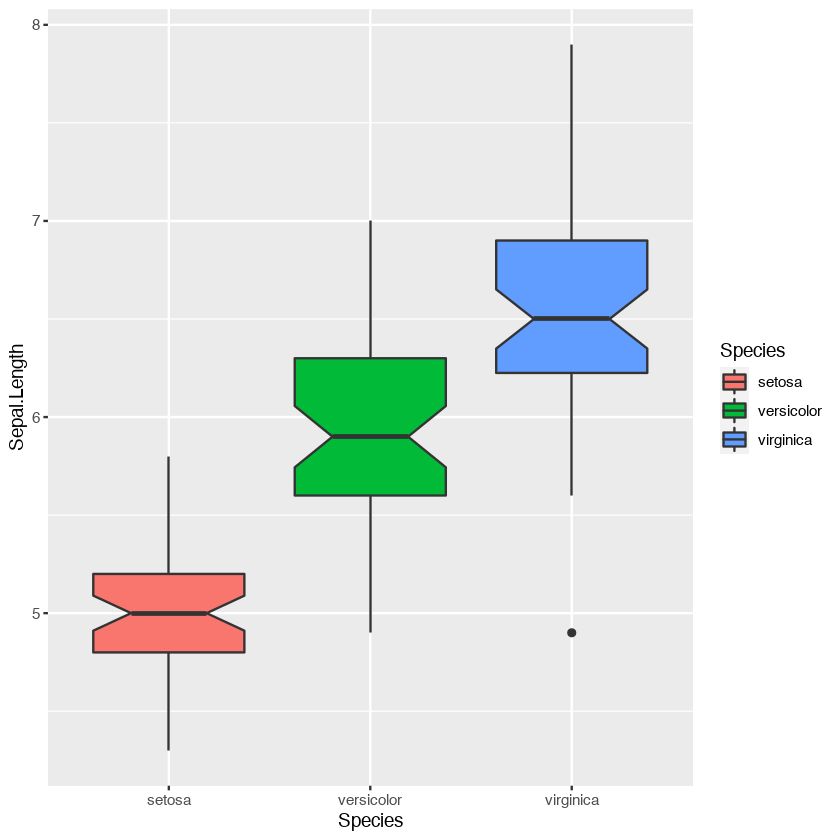

Magic R¶
This is a notebook based on an R kernel.
To install the system default R kernel to work with Jupyter Notebook:
Open the terminal
Run the following commands in the terminal (running in RStudio does not work)
# intiate R $ R # install packages install.package("IRkernel") IRkernel::installspec()This step is necessary if we want to use the default system R kernel instead of the R provided by Anaconda
After installing the R packages, we can use the R kernel in a jupyter notebook. And the entire notebook has to use the same R kernel.
If we need to combine python and R codes in one notebook, we need to do the following:
Install the rpy2 module
pip install rpy2
Use magic command to switch to R codes
%%R library(dplyr) %% R -i DUMP_PYTHON_OBJECTS_FOR_R
Running R codes in Notebook¶
After installing the R kernel, we can create an entire notebook, which is based on the system default R kernel.
This notebook is an example. (awesome!)
library(ggplot2)
library(tidyverse)
library(quanteda)
── Attaching packages ─────────────────────────────────────── tidyverse 1.3.0 ──
✔ tibble 3.0.1 ✔ dplyr 1.0.0
✔ tidyr 1.0.2 ✔ stringr 1.4.0
✔ readr 1.3.1 ✔ forcats 0.5.0
✔ purrr 0.3.4
── Conflicts ────────────────────────────────────────── tidyverse_conflicts() ──
✖ dplyr::filter() masks stats::filter()
✖ dplyr::lag() masks stats::lag()
Package version: 2.0.1
Parallel computing: 2 of 16 threads used.
See https://quanteda.io for tutorials and examples.
Attaching package: ‘quanteda’
The following object is masked from ‘jupyter:irkernel’:
View
The following object is masked from ‘package:utils’:
View
getwd()
version
sessionInfo()
'/Users/alvinchen/Dropbox/Python/PythonTricksTheBook/PythonTricksJupyterBook'
_
platform x86_64-apple-darwin15.6.0
arch x86_64
os darwin15.6.0
system x86_64, darwin15.6.0
status
major 3
minor 6.2
year 2019
month 12
day 12
svn rev 77560
language R
version.string R version 3.6.2 (2019-12-12)
nickname Dark and Stormy Night
R version 3.6.2 (2019-12-12)
Platform: x86_64-apple-darwin15.6.0 (64-bit)
Running under: macOS Catalina 10.15.6
Matrix products: default
BLAS: /Library/Frameworks/R.framework/Versions/3.6/Resources/lib/libRblas.0.dylib
LAPACK: /Library/Frameworks/R.framework/Versions/3.6/Resources/lib/libRlapack.dylib
locale:
[1] C/UTF-8/C/C/C/C
attached base packages:
[1] stats graphics grDevices utils datasets methods base
other attached packages:
[1] quanteda_2.0.1 forcats_0.5.0 stringr_1.4.0 dplyr_1.0.0
[5] purrr_0.3.4 readr_1.3.1 tidyr_1.0.2 tibble_3.0.1
[9] tidyverse_1.3.0 ggplot2_3.3.0
loaded via a namespace (and not attached):
[1] pbdZMQ_0.3-3 tidyselect_1.1.0 repr_1.1.0 haven_2.2.0
[5] lattice_0.20-41 colorspace_1.4-1 vctrs_0.3.1 generics_0.0.2
[9] usethis_1.6.0 htmltools_0.4.0 base64enc_0.1-3 rlang_0.4.6
[13] pillar_1.4.3 glue_1.4.0 withr_2.2.0 DBI_1.1.0
[17] dbplyr_1.4.3 modelr_0.1.6 readxl_1.3.1 uuid_0.1-4
[21] lifecycle_0.2.0 munsell_0.5.0 gtable_0.3.0 cellranger_1.1.0
[25] rvest_0.3.5 evaluate_0.14 fansi_0.4.1 broom_0.5.6
[29] IRdisplay_0.7.0 Rcpp_1.0.4.6 scales_1.1.0 backports_1.1.6
[33] IRkernel_1.1.1 RcppParallel_5.0.1 jsonlite_1.6.1 fs_1.4.1
[37] fastmatch_1.1-0 stopwords_2.0 hms_0.5.3 digest_0.6.25
[41] stringi_1.4.6 getPass_0.2-2 grid_3.6.2 cli_2.0.2
[45] tools_3.6.2 magrittr_1.5 crayon_1.3.4 pkgconfig_2.0.3
[49] Matrix_1.2-18 ellipsis_0.3.0 data.table_1.12.8 xml2_1.3.2
[53] reprex_0.3.0 lubridate_1.7.8 assertthat_0.2.1 httr_1.4.1
[57] rstudioapi_0.11 R6_2.4.1 nlme_3.1-147 compiler_3.6.2
head(iris)
| Sepal.Length | Sepal.Width | Petal.Length | Petal.Width | Species | |
|---|---|---|---|---|---|
| <dbl> | <dbl> | <dbl> | <dbl> | <fct> | |
| 1 | 5.1 | 3.5 | 1.4 | 0.2 | setosa |
| 2 | 4.9 | 3.0 | 1.4 | 0.2 | setosa |
| 3 | 4.7 | 3.2 | 1.3 | 0.2 | setosa |
| 4 | 4.6 | 3.1 | 1.5 | 0.2 | setosa |
| 5 | 5.0 | 3.6 | 1.4 | 0.2 | setosa |
| 6 | 5.4 | 3.9 | 1.7 | 0.4 | setosa |
ggplot(iris, aes(Species, Sepal.Length, fill=Species)) +
geom_boxplot(notch=T)

iris %>%
filter(Sepal.Length > 5)
| Sepal.Length | Sepal.Width | Petal.Length | Petal.Width | Species |
|---|---|---|---|---|
| <dbl> | <dbl> | <dbl> | <dbl> | <fct> |
| 5.1 | 3.5 | 1.4 | 0.2 | setosa |
| 5.4 | 3.9 | 1.7 | 0.4 | setosa |
| 5.4 | 3.7 | 1.5 | 0.2 | setosa |
| 5.8 | 4.0 | 1.2 | 0.2 | setosa |
| 5.7 | 4.4 | 1.5 | 0.4 | setosa |
| 5.4 | 3.9 | 1.3 | 0.4 | setosa |
| 5.1 | 3.5 | 1.4 | 0.3 | setosa |
| 5.7 | 3.8 | 1.7 | 0.3 | setosa |
| 5.1 | 3.8 | 1.5 | 0.3 | setosa |
| 5.4 | 3.4 | 1.7 | 0.2 | setosa |
| 5.1 | 3.7 | 1.5 | 0.4 | setosa |
| 5.1 | 3.3 | 1.7 | 0.5 | setosa |
| 5.2 | 3.5 | 1.5 | 0.2 | setosa |
| 5.2 | 3.4 | 1.4 | 0.2 | setosa |
| 5.4 | 3.4 | 1.5 | 0.4 | setosa |
| 5.2 | 4.1 | 1.5 | 0.1 | setosa |
| 5.5 | 4.2 | 1.4 | 0.2 | setosa |
| 5.5 | 3.5 | 1.3 | 0.2 | setosa |
| 5.1 | 3.4 | 1.5 | 0.2 | setosa |
| 5.1 | 3.8 | 1.9 | 0.4 | setosa |
| 5.1 | 3.8 | 1.6 | 0.2 | setosa |
| 5.3 | 3.7 | 1.5 | 0.2 | setosa |
| 7.0 | 3.2 | 4.7 | 1.4 | versicolor |
| 6.4 | 3.2 | 4.5 | 1.5 | versicolor |
| 6.9 | 3.1 | 4.9 | 1.5 | versicolor |
| 5.5 | 2.3 | 4.0 | 1.3 | versicolor |
| 6.5 | 2.8 | 4.6 | 1.5 | versicolor |
| 5.7 | 2.8 | 4.5 | 1.3 | versicolor |
| 6.3 | 3.3 | 4.7 | 1.6 | versicolor |
| 6.6 | 2.9 | 4.6 | 1.3 | versicolor |
| ⋮ | ⋮ | ⋮ | ⋮ | ⋮ |
| 6.9 | 3.2 | 5.7 | 2.3 | virginica |
| 5.6 | 2.8 | 4.9 | 2.0 | virginica |
| 7.7 | 2.8 | 6.7 | 2.0 | virginica |
| 6.3 | 2.7 | 4.9 | 1.8 | virginica |
| 6.7 | 3.3 | 5.7 | 2.1 | virginica |
| 7.2 | 3.2 | 6.0 | 1.8 | virginica |
| 6.2 | 2.8 | 4.8 | 1.8 | virginica |
| 6.1 | 3.0 | 4.9 | 1.8 | virginica |
| 6.4 | 2.8 | 5.6 | 2.1 | virginica |
| 7.2 | 3.0 | 5.8 | 1.6 | virginica |
| 7.4 | 2.8 | 6.1 | 1.9 | virginica |
| 7.9 | 3.8 | 6.4 | 2.0 | virginica |
| 6.4 | 2.8 | 5.6 | 2.2 | virginica |
| 6.3 | 2.8 | 5.1 | 1.5 | virginica |
| 6.1 | 2.6 | 5.6 | 1.4 | virginica |
| 7.7 | 3.0 | 6.1 | 2.3 | virginica |
| 6.3 | 3.4 | 5.6 | 2.4 | virginica |
| 6.4 | 3.1 | 5.5 | 1.8 | virginica |
| 6.0 | 3.0 | 4.8 | 1.8 | virginica |
| 6.9 | 3.1 | 5.4 | 2.1 | virginica |
| 6.7 | 3.1 | 5.6 | 2.4 | virginica |
| 6.9 | 3.1 | 5.1 | 2.3 | virginica |
| 5.8 | 2.7 | 5.1 | 1.9 | virginica |
| 6.8 | 3.2 | 5.9 | 2.3 | virginica |
| 6.7 | 3.3 | 5.7 | 2.5 | virginica |
| 6.7 | 3.0 | 5.2 | 2.3 | virginica |
| 6.3 | 2.5 | 5.0 | 1.9 | virginica |
| 6.5 | 3.0 | 5.2 | 2.0 | virginica |
| 6.2 | 3.4 | 5.4 | 2.3 | virginica |
| 5.9 | 3.0 | 5.1 | 1.8 | virginica |